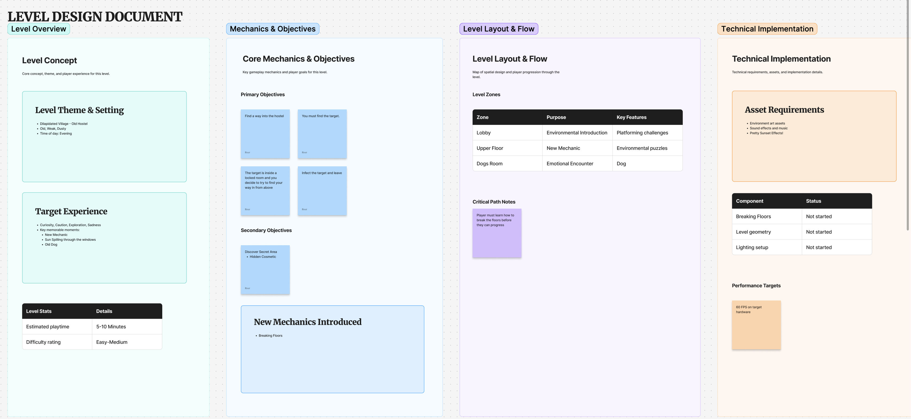
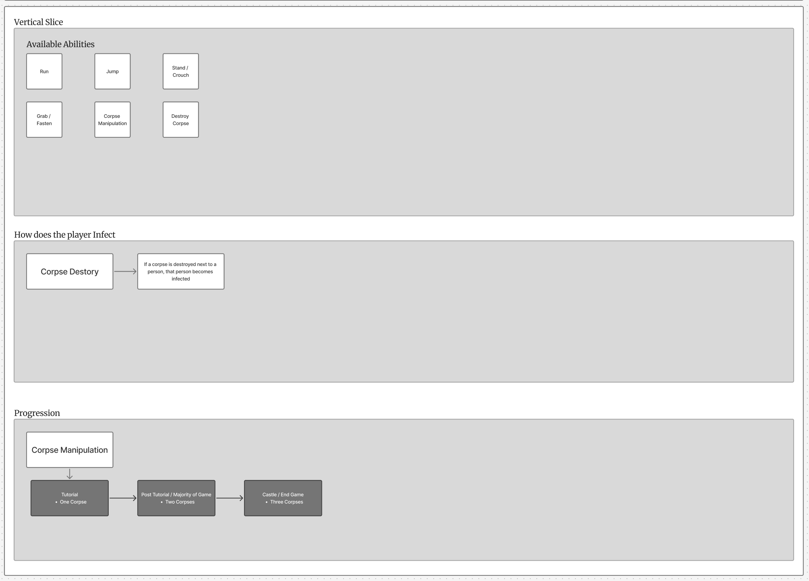
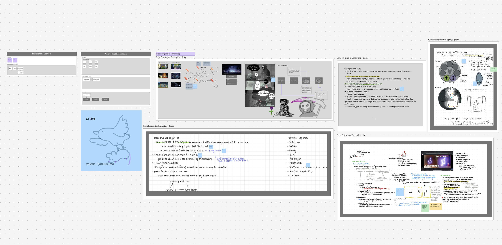
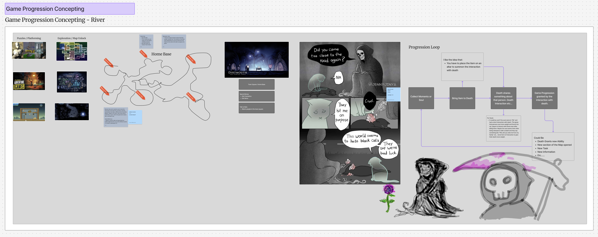
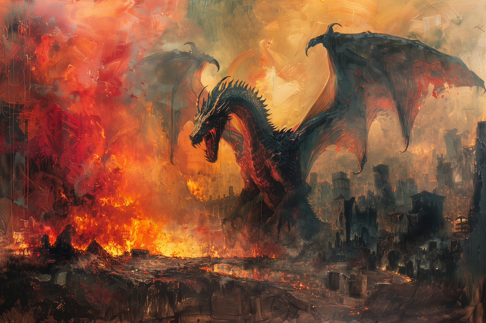

This piece focuses on first impression and silhouette. I wanted the scene to immediately communicate mood and direction, using shape and composition to pull the eye toward the most important visual space.
I am interested in building spaces that guide attention, shape movement, and create atmosphere through layout, framing, scale, and visual rhythm. This page presents a selection of level and area design work in a more visual, artbook-style format.

This piece focuses on first impression and silhouette. I wanted the scene to immediately communicate mood and direction, using shape and composition to pull the eye toward the most important visual space.

Here I explored how environment design can imply movement before the player even starts navigating. The framing, spacing, and visual weight of the scene are meant to suggest a natural path forward.

In this area I was thinking more about pacing. Dense and detailed spaces can create tension, while open areas can feel like a release. That contrast is one of my favorite tools when designing levels.

This scene was built around atmosphere and landmarking. I like areas that feel memorable at a glance, where a player can quickly identify a focal point and build a mental map of the environment.

I am always interested in how a space can quietly tell a story. Environmental details, spacing, and implied function can make an area feel lived in, even before any direct narrative is introduced.

This piece leans more into rhythm and visual layering. I wanted the space to unfold in a way that reveals information gradually, making the player curious about what sits just beyond the frame.

I think a lot about how scale affects emotion. Smaller or tighter spaces can create pressure and intimacy, while larger areas can make a moment feel mythic, lonely, or full of possibility.

More than anything, I want my level design work to feel like it is inviting a journey. Even in a still image, I want the player to feel where they have been, where they could go, and what might be waiting.